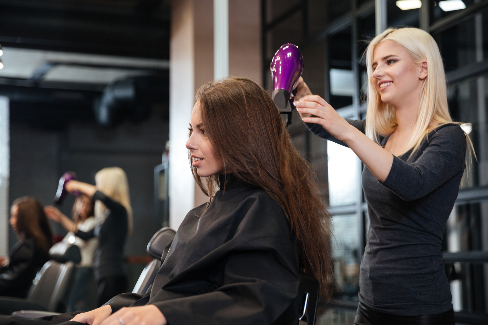
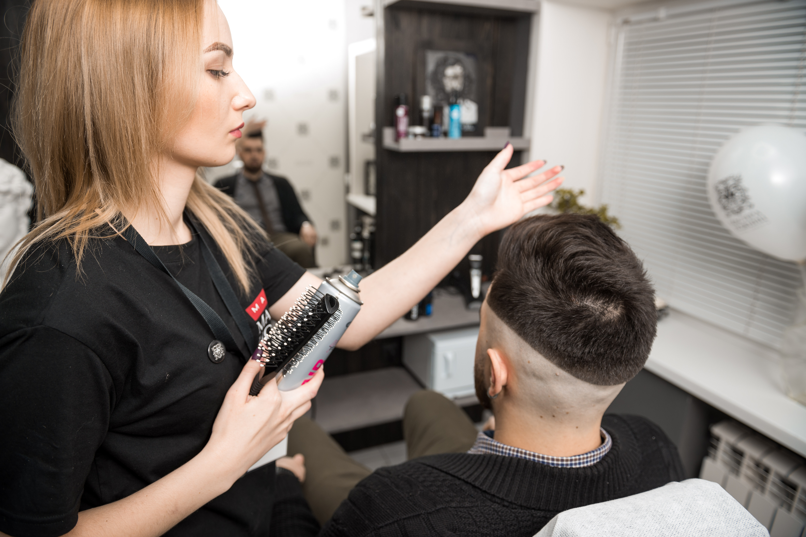

Наша команда мастеров

Топ-стилист
Елена Бычкова
Опыт работы 18 лет.
Образование: ВПУ 95, Интерколедж.
Повышение квалификации: курсы и мастер-классы «Stetch Color», «ABC principles», Paul Mitchell, Nioxin Engage, Руссвелл, "Прически из длинных волос" Руслан Татьянин, Education, Toni&Guy, Hollywood.

Опыт работы 12 лет.
Стилист
Ольга Добрянская
Опыт работы 12 лет.
Образование: Школа Стилистов «Персона», Центральная школа Красоты и Образования «Креатив».
Повышение квалификации: курсы и мастер-классы Wella Professionals, Joico, Nioxin, Alfaparf Milano, Brazilian blowout, Honma Tokyo и др.
Специализация: колорист, визажист, художник по гриму на тв, свадебный стилист. Сложные техники окрашивания, уходы, стрижки, макияж, прически и укладки любой сложности.

Опыт работы 8 лет.
Топ-мастер
Светлана Комарова
Опыт работы 8 лет.
Образование: Учебно-производственный комбинат бытового обслуживания г. Москва.
Повышение квалификации: курсы и мастер классы Учебный центр, Колористика, Alfaparf, Ботокс KV-1.Russia.com, Bouffant, Paul Mitchell, Brazillian, Blowout, BeautyGroup, Toni&Guy.
Специализация: брендовые женские и мужские стрижки, творческие техники окрашивания, укладки.

Мастер
Татьяна Совельева
Опыт работы 5 лет.
Образование: ЦПТО-1 г. Николаев.
Повышение квалификации: Международная Школа Трихологии, сертификат школы Ильи Тужилкина (авторское мраморное окрашивание).

Nail-мастер
Людмила Северная
Опыт работы 7 лет.
Образование: Школа Dona Jerdona
Повышение квалификации: школа ParisNail.
Специализация: аппаратный маникюр и педикюр, аппаратно- препаратный педикюр Golden Trace, США

Nail-мастер
Дарья Мишустина
Опыт работы 3 лет.
Образование: школа "Золотая Ника".
Повышение квалификации: школа сети салонов "Пальчики".
Специализация: аппаратный и комбинированный педикюр и маникюр, классический маникюр, покрытие, дизайн ногтей.